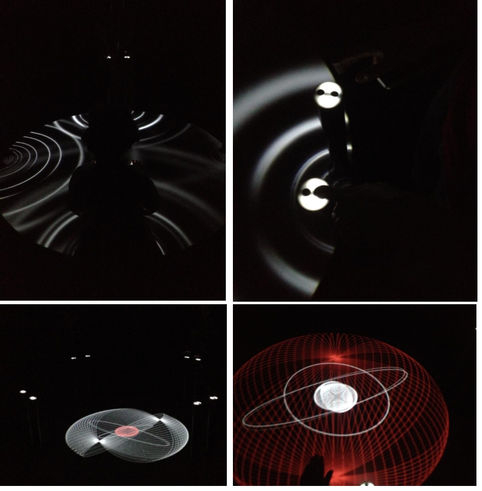

MEDIALAB
Interactive audio-visual installation

Round interactive table for four participants using proximity sensors (4-30cm range). Features virtual sliders controlling audiovisual output with 3D sound modulation via multichannel system. Demonstrates collective cooperation, self-organization, and social dynamics.
Technical Specifications
Software: Touchdesigner
Equipment: Video projector, 4-channel sound system, 8 IR rangefinder sensors, Arduino Mega
Exhibitions
- "Prostranstvovanie" 2018, St. Petersburg
- MADATAC Festival 2017, Madrid, Spain
- OpenLook Festival 2015, St. Petersburg
Creator Information
Tonoptik collective members: Alexander Inkov, Yury Gorbachevskiy, Yury Tolstoguzov (established 2015)